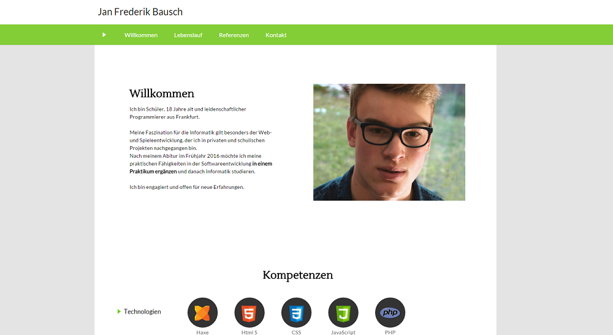

Persönliche Homepage - jfbausch.de

Mein Ziel war es, eine persönliche Homepage zu entwickeln.
Für die Umsetzung zuerst habe ich die üblichen Content-Management-Systeme wie Joomla oder Wordpress, sowie
das simplere "flat-file" System Grav ausprobiert.
Alle Plattformen waren aber für meine einfache Webseite aber zu komplex - schließlich hat meine Webseite
keine dynamischen Inhalte oder viele Seiten. Da ich dennoch nicht auf Themes verzichten wollte, habe
ich mich kurzerhand dazu entschlossen, ein eigenes, unkompliziertes Backend zu programmieren.
Damit bin ich in der Lage, Suchmaschinen-freundliche URLs, Layouts und hierarchische Seitenstrukturen
umzusetzen.
Ein Hauptaugenmerk lag bei der Entwicklung auch auf dem responsive Design - sprich ein Layout, dass
sich dynamisch an die Bildschirmgröße anpasst. Damit kann die Webseite auch optimal auf dem Handy und
Tablet betrachet werden.
Quelltext auf Github